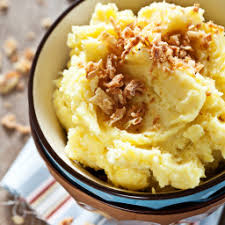

Home
Mashed Potatoes

Description
This mashed potatoes recipe shows you the proper technique for making buttery, fluffy, lump-free mashed potatoes every time for the ultimate comfort food.
Ingredients
- 3 large russet potatoes, peeled and halved lengthwise
- 1/2 cup whole milk
- 1/4 cup butter
- salt and ground black pepper to taste
Directions
- Gather all ingredients.
- Place potatoes in a large pot and cover with cold salted water by about 1 inch. Bring to a boil. Reduce heat to medium-low, cover and simmer until tender and easily pierced with a fork, 20 to 25 minutes.
- Drain potatoes, then return to the pot. Turn heat to high and allow potatoes to dry for about 30 seconds. Turn off heat.
- Mash potatoes with a potato masher twice around the pot, then mash in milk and butter until smooth and fluffy.
- Season with salt and black; whisk until evenly distributed, about 15 seconds.
- Serve and enjoy!